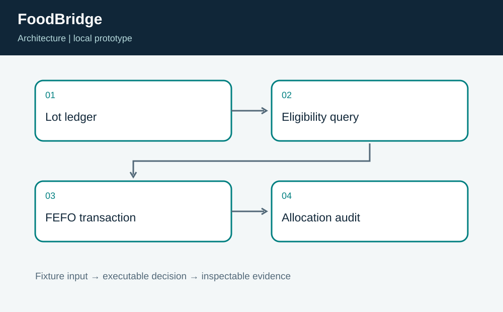
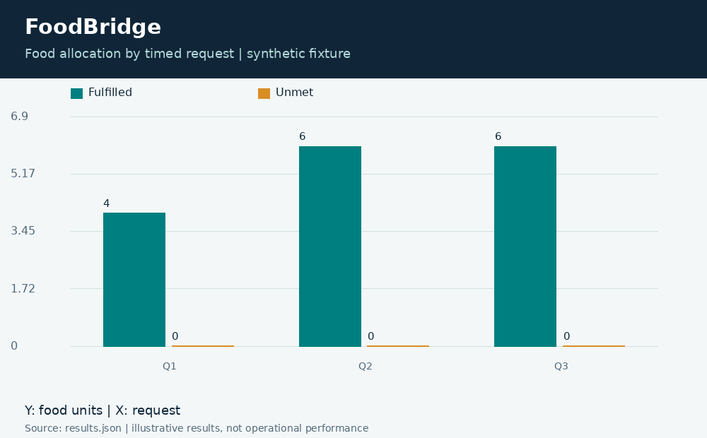
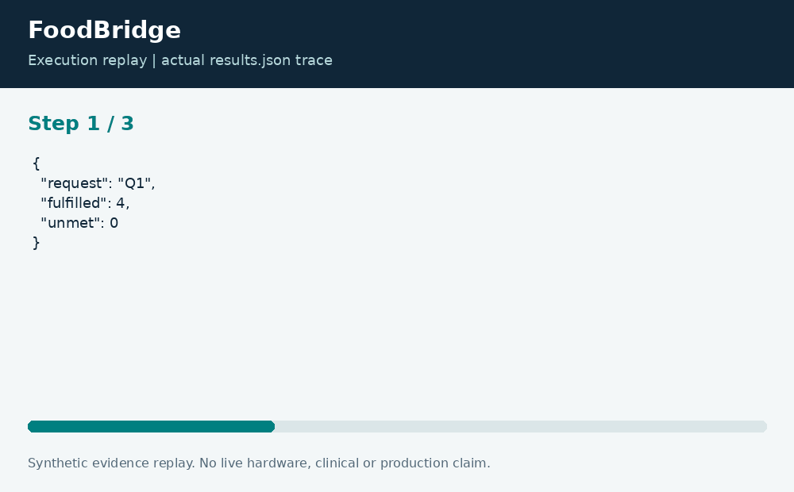

FoodBridge: Perishable Inventory Allocation
Neco Thomas · Project Phoenix · Independent portfolio prototype Implementation and editorial preparation assisted by AI. All inputs are synthetic. Results below come from the included local execution; they are not employment accomplishments or production outcomes.
The decision worth solving
Perishable inventory planning needs an audit trail at the lot level. A total-fulfilled chart can hide the use of an expired lot or stock that had not arrived. FoodBridge keeps availability and expiry inside the allocation query.
Engineering question: Can a food-rescue desk fulfill timed requests while keeping expired lots out of allocations?
What I am sharing
A transient SQLite database stores synthetic lots with nonnegative units and valid availability-to-expiry windows. Requests are processed by time and identifier. Eligible lots must already be available and must expire strictly after the request time. Parameterized SQL allocates first-expiring stock first within a transaction.

The project is self-contained: source, its own fixture, eight tests, a saved result, a technical diagram, a result chart, and an animated execution trace. It has no runtime dependency on the other nineteen projects. The common entry point is only a convenience for reviewers; the decision logic belongs to this project.
Run the demonstration
Requirements: Python 3.12 or newer. The primary CLI uses only the Python standard library; native components require the named toolchain. No API keys, paid services, patient records, robot hardware, or cloud account are required.
python3 app.py
python3 -m unittest discover -s tests -vOn Windows use python or py -3 if python3 is not installed. Native C/C++ entry points currently expect the Linux GCC toolchain. Linux execution is verified; other operating systems are extension targets until separately tested. run.ps1 and run.sh are convenience launchers, not evidence of OS certification.
What the run actually showed
The demonstration fulfills 16 requested units, leaves 1 unit, and reports that remaining unit as expired at the reporting horizon. Tests reconcile supply and demand, verify expiry and availability boundaries, and prove that a punctuation-heavy identifier is treated as data rather than SQL.
| Metric | Fixture result |
|---|---|
| allocated units | 16 |
| unmet units | 0 |
| remaining units | 1 |
| expired remaining units | 1 |

The chart uses one stated measurement unit and is computed directly from the saved output. Exact values and the execution trace are in results.json, and individual assertions are visible in the test file.

The tradeoff and the boundary
This is a desk allocation model, not a food-safety certification or delivery optimizer. Food types, allergens, handling temperature, nutrition, vehicle routes, and recipient preferences are absent. First-expiring-first-out is not a global proof of minimum waste across all possible future requests.
The test evidence supports behavior on the published cases. It does not establish production reliability or a universal performance estimate. Invalid inputs are rejected or represented explicitly according to the implementation; a reviewer should read the tested boundary cases before extending the input contract.
How a team would move this forward
Warehouse staff should own lot evidence, partner organizations should validate requests, and logistics staff should supply transport constraints. The next milestone is a replay with item compatibility and delivery windows, followed by reconciliation between promised, picked, delivered, and rejected units.
For a principal-level review, the useful handoff is the decision contract: who supplies each input, who interprets exceptions, who approves any real-world action, and what evidence would justify expanding the scope. That handoff is separate from the prototype run and remains a proposed next step.
Reproduce and review
Each folder can be copied out and run independently. validation.log records the eight local assertions. Optional chart regeneration uses Pillow: install requirements-visuals.txt, then run python3 visualize.py. The figures replay saved results and do not fabricate measurements. Re-run the CLI before redrawing figures after changing a fixture.
Primary technical reference: https://docs.python.org/3/library/sqlite3.html. This reference informs the implementation context; it does not endorse or certify this project.